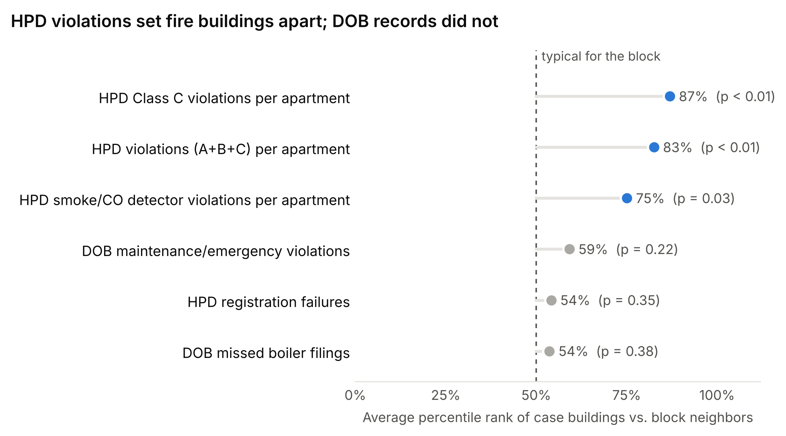

Fire findings (pilot)
Buildings vacated after fires had far more hazardous HPD violations than their neighbors
Of the 7 buildings in the pilot, 4 had the highest rate of Class C (“immediately hazardous”) HPD violations per apartment among comparable buildings on their block. DOB records alone did not set them apart.
How each record ranked
Each fire building was compared with similar residential buildings on its own block (137 in total), using only records dated before 2025. A rank of 50% means typical for the block; 100% means higher than every neighbor.
Blue dots are unlikely to be chance (permutation test, p < 0.05); gray dots are not.
Building by building
| Location | Apartments | Class C violations | Class C per apt. | Rank on block | Neighbors compared |
|---|---|---|---|---|---|
| Brooklyn, block 1834 | 8 | 238 | 29.8 | 100% | 39 |
| Bronx, block 3257 | 27 | 163 | 6.0 | 100% | 1 |
| Manhattan, block 2046 | 24 | 131 | 5.5 | 81% | 21 |
| Brooklyn, block 4755 | 6 | 155 | 25.8 | 100% | 25 |
| Queens, block 734 | 6 | 10 | 1.7 | 81% | 27 |
| Bronx, block 2522 | 24 | 95 | 4.0 | 46% | 13 |
| Brooklyn, block 3790 | 4 | 112 | 28.0 | 100% | 11 |
The one clear exception is the Queens building, which had a nearly clean HPD record before its fire.
What it means, and what it doesn’t
- The signal is HPD-specific. For fires, conditions tenants report to HPD (wiring, detectors, doors, heat, general disrepair) carry the signal. In a matching pilot on structural collapses, the pattern reversed: DOB history mattered and HPD alone did not.
- Seven cases is a lead, not a finding. The full study scales this to every HPD fire-damage vacate since 2018, with matched controls and a held-out test on later fires.
- Some violations may follow the fire. If a fire happened in late 2024 and the vacate order came in January 2025, post-fire inspections could count as “warnings.” The full study only uses records from at least 60 days before each fire.
- More complaints mean more inspections. Buildings with active tenants generate more violations. The full study controls for complaint volume.
Method: how the comparison works. Code: pilot/fire_analyze.py and pilot/pilot_stats.py.